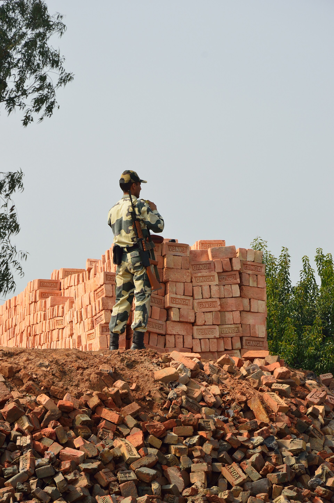
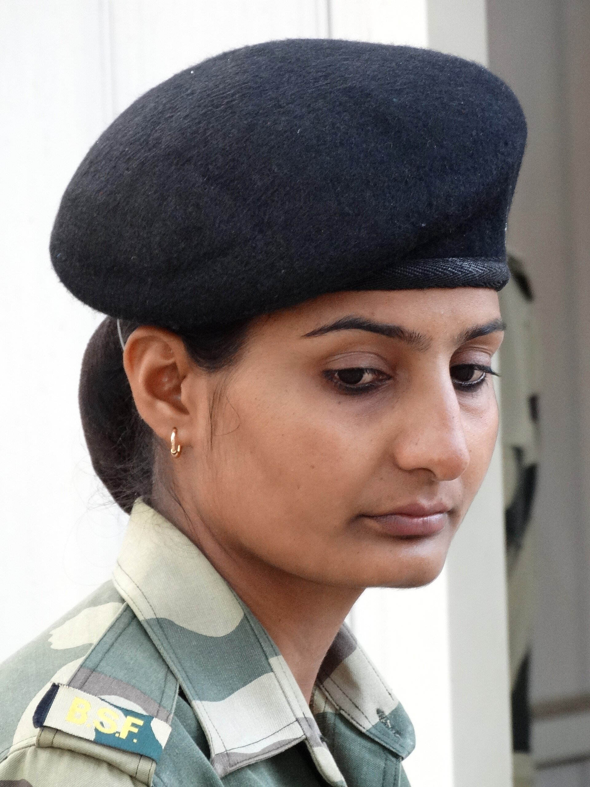
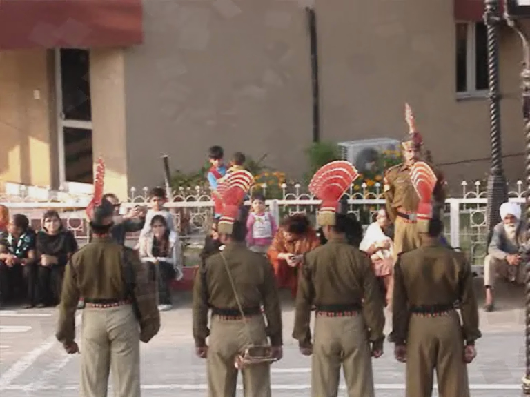

The same ProSight M530 that runs on Indian police beats — now at the BOP, the Integrated Check Post, and on the officer handling the seizure. One device. One Command Center. One sovereign cloud.
Published BSF, DRI and DPDP data — not our pitch. These are the operational realities that BWC directly addresses at every checkpoint and patrol line.
BSF patrols the entire India–Bangladesh and India–Pakistan land perimeter. Encounters, alerts and seizures along this line are documented by radio log and oral debrief — with no video record to anchor the chain of custody.
DRI and CBIC seize over ₹12,000 crore in contraband each year. Without GPS-stamped field video, seizure chains are reconstructed from memory — and routinely challenged at the first cross-examination.
The Digital Personal Data Protection Act 2023 applies to all data collected at the border, including biometrics, vehicle records and checkpoint footage. Every camera deployment must be data-sovereign by architecture.

Every active M530 on a map. Geofenced patrol zones, route history, deviation alerts. The Sector Commander sees the patrol line in real time.
Tamper-proof cloud. Every access, download and edit permanently logged. Court-admissible chain of custody from the field to the tribunal.
Officer-triggered and automatic alerts routed to the duty officer in seconds — with GPS coordinates and live video attached.
Section Commander, Company Commander, Sector HQ — each rank sees only what their clearance allows. No data leakage across command levels.
2K BWC · 12h · IP67 · MIL-STD-810G · AES-256 · ProSight OS.
Live stream and auto-upload. 128 GB local buffer when offline at remote posts.
ap-south-1. 100% Indian data residency. Zero cross-border transfer.
Live dashboard, evidence vault, rank-aligned RBAC, audit log.
Border intelligence is national-security data. Prosight stores 100% of footage on AWS Mumbai (ap-south-1) — no frame ever crosses an international boundary. The architecture is DPDP Act 2023 compliant by design, with AES-256 encryption from device to vault and an immutable audit trail on every access.

These are the three most-cited BWC studies globally — Cambridge (2014), London Met (2017) and NSW Police (2015). The accountability effect documented in patrol contexts translates directly to checkpoint and seizure operations.
30-day field trial — full device provisioning, ProSight OS deployment, Command Center access. No CapEx. Our engineers handle setup on-site.